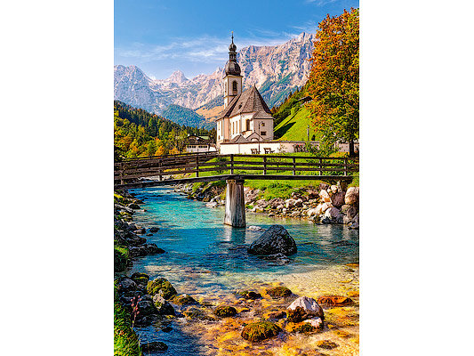

Испания — одна из немногих стран мира, где до сих пор сохраняется монархия. Но если в Великобритании королева — это символ, то испанский король Филипп VI является полноценным лидером государства. Одна из привилегий испанских монархов — это роскошная резиденция, расположенная в Мадриде. Её построили в середине XVIII века по указу тогдашнего короля Филиппа V, пожелавшего иметь в своем распоряжении дворец, не уступающий Версалю. Однако жить во дворце Филиппу V не пришлось, ведь он скончался за 18 лет до окончания строительства. Первым королем, поселившимся в этих стенах, стал Карл III, но даже после его смерти дворец не был завершен, так как внутри долгое время продолжались работы по обустройству интерьера. Участие в создании фресок принимали известные итальянские и испанские мастера: Франсиско Гойя, Караваджо, Лука Джордано и многие другие. Украшение дворца заняло не один год, ведь внутри него более тысячи комнат. Одного дня не хватит, чтобы посетить их все, а вот самые примечательные из них вам обязательно покажут на экскурсии.
Королевский дворце
